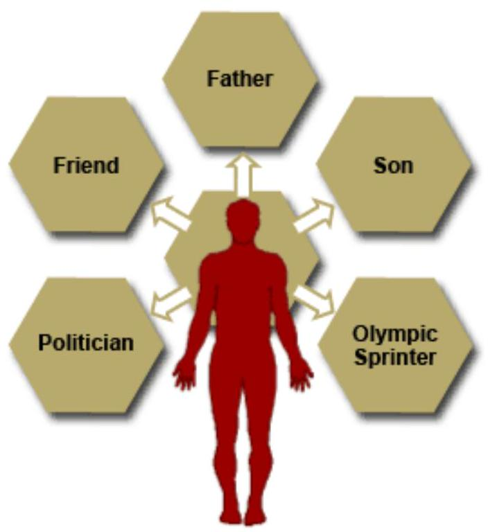

Tylor (1902) defined culture as a complex which includes knowledge, beliefs, arts, morals, laws, customs and other capabilities acquired by man as manmade.
Culture is specific to a particular society.
Each individual society has its own body of customs, beliefs and social institutions.
Can also define culture as accepted way of living of a particular human group.
Causes of cultural change
Cultural change can be both internal exogenous and external endogamous
Endogamous change
Originates within a specific society.
Technological innovations-e.g computers, television,mobile telephones. These technology based products have transformed peoples ways of life.
Ideology- ideology refers to a set of interrelated religions or political beliefs values or norms that justify pursuit of a given goal e.g politics.
Social cultural conflicts- conflicts also bring about change, once a conflict is brought into surface, ways and means of resolving it must be found. The solution agreed upon initiates change.
Planned change- education falls under planned change and is used to bring new ways of thinking about politics, work and general outlook to life through the curriculum in school system.
Exogamous cultural change
Biological and natural calamities e.g. floods, drought, landslides and earth quakes, while biological disasters comprise emergence of new diseases like Eboli, Aids and severe acute respiratory syndrome
Diffusion-diffusion is the transmission of culture traits from one culture to another. It occurs when different cultures come together.
Content of culture
Speech- this includes languages and the writing system.
Material traits-this component of culture includes food and dietary habits, dressing, mode of grooming, and type of shelter.
Art- music, painting, drawings
Religious practices- modes of worship and view of creator, understanding of sickness, illness and treatment of sick.
Family and social practices-e.g inheritance, marriage, customs.
Characteristics of culture
Culture is a product of human interaction and therefore it is not inborn.
Culture extends beyond the life of each member of the society- when some individuals die others continue to initiate new members into the cultural heritage
Culture is cumulative and transimissable from one generation to the next by language and non verbal symbols.
Culture provides people with identity- it tells them who they are, where they came from and where they are heading.
Culture is both ideal and manifest. Ideal culture prescribes what people should do while manifest culture stand for actual behavior of people.
Culture is both adaptive and integrativeculture must adapt for instance to the environmental force. Depending on people geographical region they learn how to live in it.
Culture possesses some degree of stability and dynamism e.g norms and values
SECTION 3: SOCIAL GROUP CONCEPTS
Objectives
Define a social group
Differentiate between primary and secondary group.
A social group is a given aggregate of people playing interrelated roles and recognized by themselves or others as a unit of interactions. A social group can also be defined as a collection of two or more individuals interacting on each other, who have some common objects of attention and participate in similar activities.
Classifications
Primary group
Secondary group
Primary group
Primary groups are characterized by intimate face to face association and cooperation.
Characteristics
Primary groups are small in size.
To make the relations of the people close, it is necessary that their contacts also should be close, physical proximity provides an opportunity for the development of the primary groups.
To promote intimacy of relationship the primary group should be stable.
Members join this group with aims of satisfying self interest.
Secondary groups
When face to face contacts are not present in the relation of members, we have secondary group.
Characteristics
Relation of members in secondary group are formal and impersonal
They are large in size
The membership is not compulsory
The members of the group hardly meet face to face-they communicate with each other through indirect means.
A secondary group is regulated by formal rules.
The purpose of a secondary group is to fulfill a specific function.
Reference groups
Primary and secondary groups can both act as our reference groups or groups that guide our behavior and altitudes.
Characteristics
The individual or group considers the behavior of other individuals or groups and intimates it.
In reference group a group feels its weaknesses or defects and desire to rise higher in social scale.
SECTION 4: THE SOCIALISATION PROCESS
Introduction
In this section you are going to continue to cover the concepts in sociology focussing on the socialisation process.
Objectives
By the end of this section you will be able to:
Define the socialisation process
Describe the two parts of the socialisation process
Identify the agents of socialisation
The Socialisation Process
As you cover the socialisation process you need to note that this process draws attention to the individual and how they fit within the society through the adaptation process, that is, the ability to cope with life changes. Individuals need to develop coping abilities since all situations in life keep changing (Gelder, 2000).
The Socialisation Process
According to Peil (1977) it refers to all the things that a child needs to know in order to function as a confirmed member of society.
Akinsola (1983) defines socialisation as the fundamental social process by which a person is introduced to be part of society into which one was born and learns its culture. Although much of this learning takes place in the first two or three years of life, socialisation continues throughout life. When we attend school, move to a new place, take a new job or whenever we are called to make changes in customs, norms or behaviour, additional socialisation is necessary. Socialisation integrates a child into the community by teaching them the disciplines, aspirations, social roles and skills necessary for group membership.
By comparing the two definitions it can be observed that socialisation is a process or adjustment and this adjustment starts from birth and continues throughout one's life (Myles 1983). This definition was further expanded by Joseph (1986), who explained that parents, teachers and other social agents define roles for people in society.
Socialisation refers to the development of the individual from infancy upwards; it is intertwined with the educational system, whether through formal education in schools, through non-formal programmes, or through informal education such as family upbringing. It is intrinsically based upon the right to education and hence the maximisation of the potential of the individual in the process of development.
Human infants are born without any culture. They must be transformed by their parents, teachers, and others into cultural and socially adept animals. The general process of acquiring culture is referred to as socialisation. During socialisation, we learn the language of the culture we are born into as well as the roles we are to play in life. For instance, girls learn how to be daughters, sisters, friends, wives and mothers. In addition, they learn about the occupational roles that their society allows them. We also learn and usually adopt our culture's norms through the socialisation process. Norms are the conceptions of appropriate and expected behaviour that are held by most members of the society. While socialisation refers to the general process of acquiring culture, anthropologists use the term enculturation for the process of being socialised to a particular culture. You were educated in your specific culture by your parents and the other people who raised you.
Socialisation is important in the process of personality formation. While much of human personality is the result of our genes, the socialisation process can mould it in particular directions by encouraging specific beliefs and attitudes as well as selectively providing experiences. This very likely accounts for much of the difference between the common personality types in one society in comparison to another.
Successful socialisation can result in uniformity within a society. If all children receive the same socialisation, it is likely that they will share the same beliefs and expectations. This fact has been a strong motivation for national governments around the world to standardise education and make it compulsory. Deciding what things will be taught and how they are taught is a powerful political tool for controlling people. Those who internalise the norms of society are not likely to break the law or want radical social changes. In all societies, however, there are individuals who do not conform to culturally defined standards of normalcy because they were 'abnormally' socialised, which is to say that they have not internalised the norms of society. These people are usually defined by their society as being deviant or even mentally ill.
Parts of the Socialisation Process
Having defined the socialisation process you will now identify the parts that make up the socialisation process. The socialisation process is made up of two parts:
Primary socialisation
Secondary socialisation
You will study each of these individually.
Primary Socialisation
This is the type of socialisation that starts from infancy with parents and other family members who are in close contact with the young one. The mother plays an active role in bonding with her infant. As the child advances in age, they are taught the expected roles according to age and sex. For example, children are taught to be obedient to parents and other older persons in the neighbourhood. Children also learn by observing and imitating others. Therefore, parents should be role models if they expect their children to attain acceptable behaviour. In due course children will learn how to dress, use the toilet facilities, feed themselves and so on. In the traditional African family, parents and the extended family members were involved in socialising the child. According to Peil (1977), at this stage, the child also develops a personality, that is, identifies the self in relation to society.
In modern times, although parents are still the basic agents of socialisation, there are additional agents. These developments are often associated with the tendency for mothers to be in full time employment. Usually, the infant stays with the mother for six weeks following birth. The baby is then left in the care of hired female domestic help. The mother does this in order to resume her duties in either the government, private or self-employment. It is no longer possible to have extended family members to help in the care of the young. When the child reaches the age of six years, they are ready to be introduced to socialisation outside the home and they are then able to communicate using a common language. This leads to secondary socialisation.
Secondary Socialisation
This takes us outside the home with playmates in the neighbourhood, at school and with other community agents, for example, religious forums. According to Peil (1977), rearing children in an urban area of western Africa is very much the same as in the countryside. For example, parents who are well educated prefer to move from rural to urban areas. They may work as employees of the government and children are encouraged to go to school early and join church groups. All these offer secondary socialisation. In addition, children in various neighbourhoods play with their peers who also influence their behaviour and attitudes. As these children continue their education through primary, secondary and college levels, they come into contact with several social groupings, all of which are in a position to influence their behaviour.
During adolescence, the youth often confide in their peers. They no longer feel compelled to express their needs to the parents. When this happens, it is possible for the youth to imitate negative behaviours from their peers, behaviour which is often contrary to their parents' expectations. On the other hand, youths who move to boarding secondary schools may get secondary socialisation from their teachers, who become their new parent figures and role models. The youth of today often develop their own pattern of language for communication, known as sheng in Nairobi, that parents and teachers are unable to communicate in.
As a member of one group, the individual recognises that there are several roles one is expected to fulfil. For example, when one joins the nursing profession as a student, they are expected to continue being a daughter or son, a learner while in class and clinical areas, a member of the student nurses' association, a choir member, a parent and a spouse. All these roles demand the attention of the same individual. This calls for emotional and physical maturity in order to fulfil all these roles without conflicts. For example, as you continue studying, you will need to share out some of your social roles with family members in order to have adequate time for your assignments.

In general, a child is 'socialised' in various ways, for instance, by watching adults. This is often noticeable in the way much of children's play imitates adults. Some socialisation is deliberate, for example, when a teacher or a parent shows a child how to do something. At other times, it is casual or even accidental. A parent or another child indicates that performance has been unsatisfactory and the child must pick up the knowledge they need informally through observation. In addition to verbal instructions and observed behaviour, the child responds to the attitudes expressed through physical posture, tone of voice and other signs, which gradually acquire meaning for them, for example, a raised arm signals trouble. The prime source of socialisation, though, is language. A person who cannot hear or speak has great difficulty communicating with others and is often excluded from groups.
Although all members of the society are socialised, they do not all turn out the same. Each individual comes under various influences and responds to them differently. A child's socialisation may therefore not be exactly the same as that of their parent's. Personality and innate capabilities are important in secondary socialisation. Given the same socialisation, one man may turn out to be much more independent than his brother, or more scholarly or a better drummer.
Listed below are the other classifications of socialisation.
Natural and Planned Socialisation
Natural Socialisation
Planned Socialisation
Natural socialisation occurs when infants and youngsters explore, play and discover the social world around them.
Planned socialisation occurs when other people take actions designed to teach or train others - from infancy on.
Natural socialisation is easily seen when looking at the young of almost any mammalian species (and some birds).
Planned socialisation is mostly a human phenomenon; and all through history, people have been making plans for teaching or training others.
Both natural and planned socialisation can have good and bad features: It is wise to learn the best features of both natural and planned socialisation and weave them into our lives.
Positive Socialisation
Positive socialisation is the type of social learning that is based on pleasurable and exciting experiences. We tend to like the people who fill our social learning processes with positive motivation, loving care, and rewarding opportunities. Negative socialisation occurs when others use punishment, harsh criticisms or anger to try to 'teach us a lesson'; and often we come to dislike both negative socialisation and the people who impose it on us.
Mixed Positive and Negative Socialisation
There are all types of mixes of positive and negative socialisation; and the more positive social learning experiences we have, the happier we tend to be - especially if we learn useful information that helps us cope well with the challenges of life. A high ratio of negative to positive socialisation can make a person unhappy, defeated or pessimistic about life.
Deliberate Socialisation
Deliberate socialisation refers to the socialisation process whereby, there is a deliberate and purposeful intent to convey values, attitudes, knowledge, skill and so on. Examples of deliberate socialisation include:
School situation
Parents telling a child to always say 'please'
Unconscious Socialisation
Unconscious socialisation occurs as a result of spontaneous interaction, with no purposeful or deliberate attempt on the part of anyone involved to train or educate and so on. An example of unconscious socialisation is, for example, when a child learns how to use vulgarity by observing a parent caught up in a frustrating traffic situation.
Having covered the various types and classifications of socialisation, you will now cover the agents of socialisation.
Agents of Socialisation
You have already noted that parents and close relatives are the first to socialise children. As the child reaches school age, most socialisation begins to take place outside the home. The primary agents of socialisation make the deepest impression on the personality of the child because they provide the first training. The other agents must, therefore, compete for attention on the already established framework.
Family
The family is made up of parents, children and close relatives. These are the primary agents of socialisation who influence the child's behaviour and attitudes within the society. You will study more on the family in section four on social institutions.
Social Institutions
These are explained as social organisations each with a specific function (Akinsola 1983). Examples of social institutions are the family, schools, religious organisations, government and hospitals. Each of these social institutions is organised to offer a service to community members. When a child enters school they start experiencing secondary socialisation through the teachers, schoolmates and the school environments. All these factors play a part in the child's socialisation.
Peers, School Friends and Neighbours
The peers, schoolmates and neighbours that a child spends most of their waking hours with also become major agents. Children have friends whom they want to be similar to. However, sometimes what their peers tell them may not conform with what the parents are telling them and so they have to make a decision between the two. The decision made depends on the strength of the foundation laid by the parents.
Electronic and Printed Media
These include books, magazines, journals, television, radio, computer (internet) and others. A child may begin to emulate what they are seeing on television and may act negatively if they are not able to filter the good and the bad based on earlier teachings. This can have both positive and negative influences on the child or even an adult.
Generally, it can be seen that various socialising agents encountered by an individual may support each other by promoting the same goals, or they may provide contradictory advice. The child may be taught one thing at home and another at school. The influence of either the parents or the school thus becomes weakened and the child may not fully internalise any norms because they are not sure which ones are most valuable. This becomes more and more frequent as the child grows up. This is because the child encounters other agents of socialisation like the church and other peers and they may not always be carrying the same message. In the end, the child has to choose whom to learn from - either the parents, the friends, the church, etc and so one becomes weakened as another is strengthened.
Aims of Socialisation:
To instil discipline (for example, don't walk in front of a moving car).
To develop aspirations and ambitions (for example, I want to be a nun, rock star, great sociologist).
To develop skills (for example, reading, driving and so on).
To enable the acquisition of social roles (for example, male, student and so on).